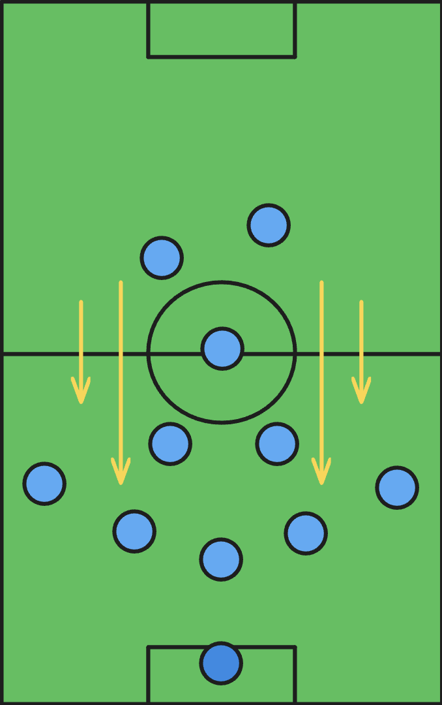
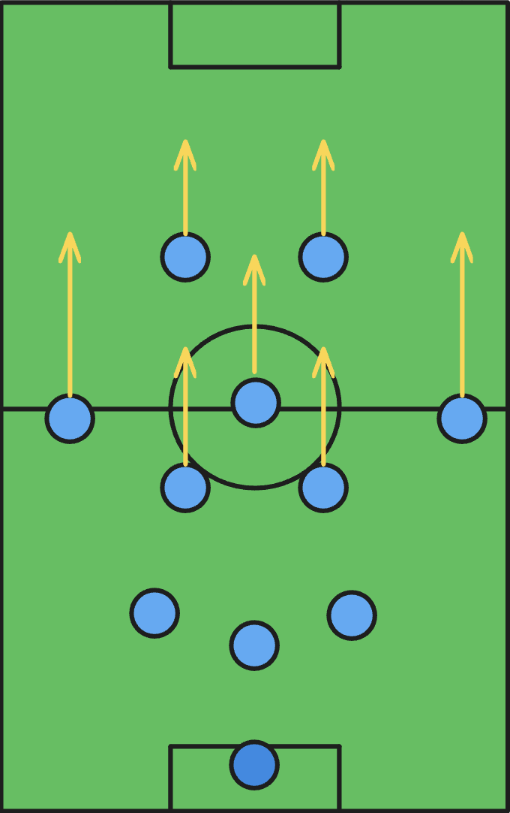
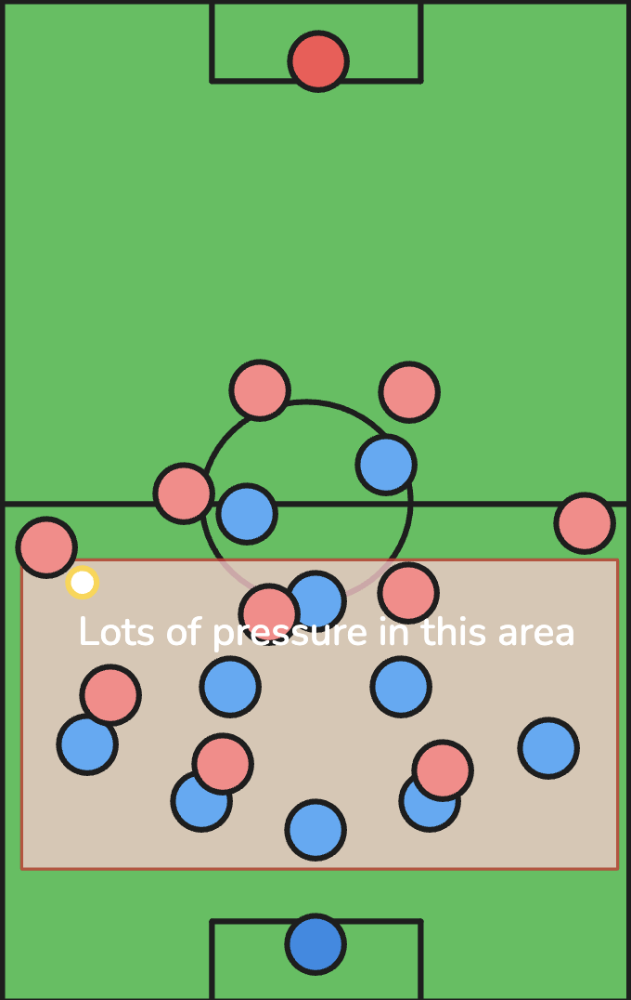
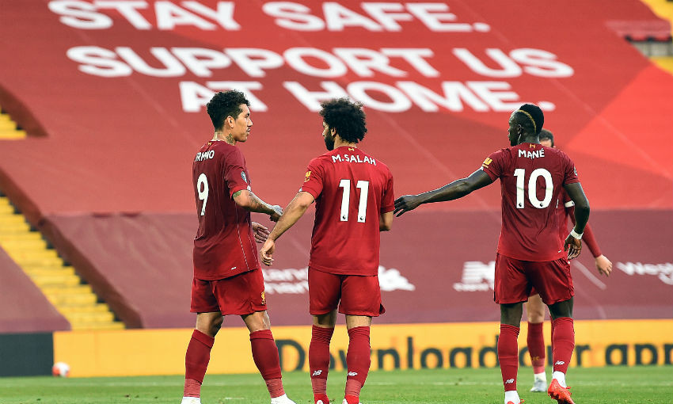
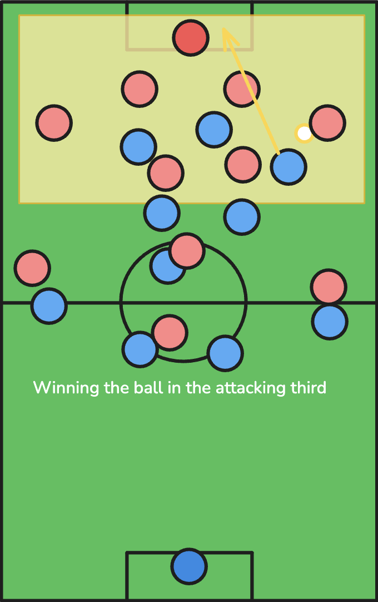
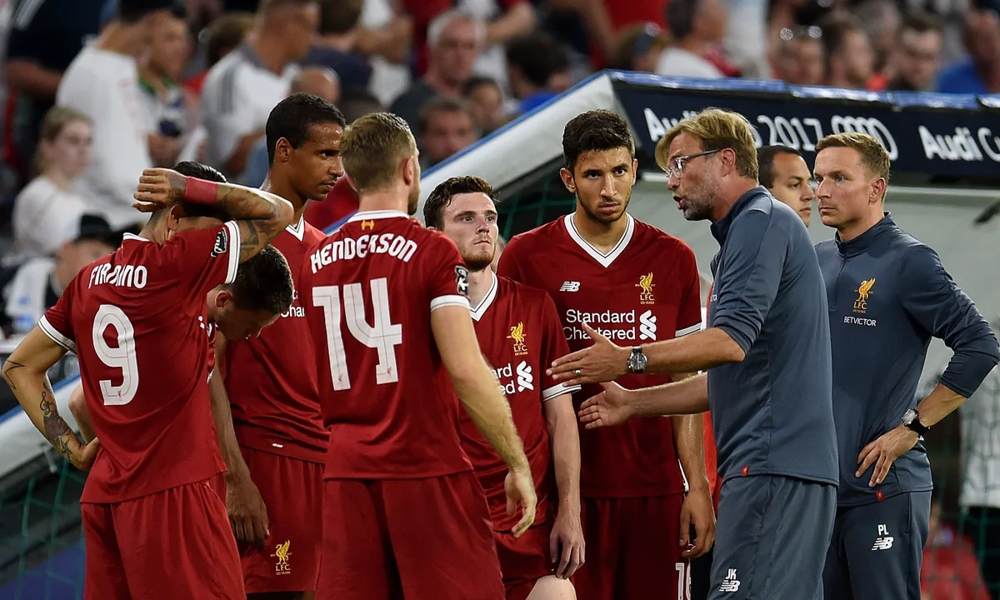

What is Counter-Attacking?
Counter-attacking soccer is a reactive style of play that focuses
on quickly transitioning from defense to attack after winning the
ball. Teams that employ this style typically allow opponents to
have possession, then strike rapidly when they regain the ball.
The key to effective counter-attacking is speed in transition. As
soon as possession is won, players immediately look to exploit the
spaces left by opponents who were committed to attack. The image
shows a team in a 5-3-2 formation. In that, they are to bait the
other team's defenders forward by dropping back, and then quickly
transition to a 3-5-2 formation to attack.

Advantages
Counter-attacking is highly efficient, often requiring fewer
passes to create scoring opportunities. It takes advantage of
disorganized defenses when opponents are transitioning from attack
to defense.
This style is particularly effective against possession-based
teams that commit many players forward. It also allows teams with
less technical ability to compete against more skilled opponents
by focusing on defensive organization and quick transitions.

Disadvantages
Counter-attacking teams often spend long periods without the ball,
which can be physically and mentally draining. This approach can
also be predictable if a team relies too heavily on it.
Furthermore, defending deep invites a lot of pressure from the
opposing team, which can lead to mistakes.
Another disadvantage is that counter-attacking requires precise
execution under pressure. If the initial passes after winning
possession aren't accurate, the opportunity can be lost.
Additionally, this style can be neutralized by opponents who are
cautious in attack and maintain good defensive shape.
Key Characteristics of Counter-Attacking
- Key idea: Compact defensive shape when out of possession to suck in the other team.
- To score you must execute quick vertical passes to transition from defense to attack.
- You need fast, direct runners who can exploit space behind defenses.
- Speed is the main weapon: Efficient use of possession with fewer passes to create chances.
- It is important that one has disciplined defensive organization and patience without the ball.
Counter-Attacking in Action



Liverpool
While Jürgen Klopp's Liverpool is known for their pressing, they are also masters of the counter-attack. Their front three of Salah, Mané, and Firmino excelled at exploiting space with their pace and movement after winning the ball.
Liverpool
Coined as 'Jurgen Pressing', Liverpool's counter-pressing often leads directly to counter-attacks, as they win the ball in advanced positions and immediately look to attack before opponents can reorganize. This combination of pressing and counter-attacking has made them one of the most feared teams in Europe.
Liverpool
Liverpool showed that sometimes you don't need the ball to win. Their defensive organization created a solid base and a trap that plays right into their strengths. They went on to win the Premier League title and Champions League using this tactic.